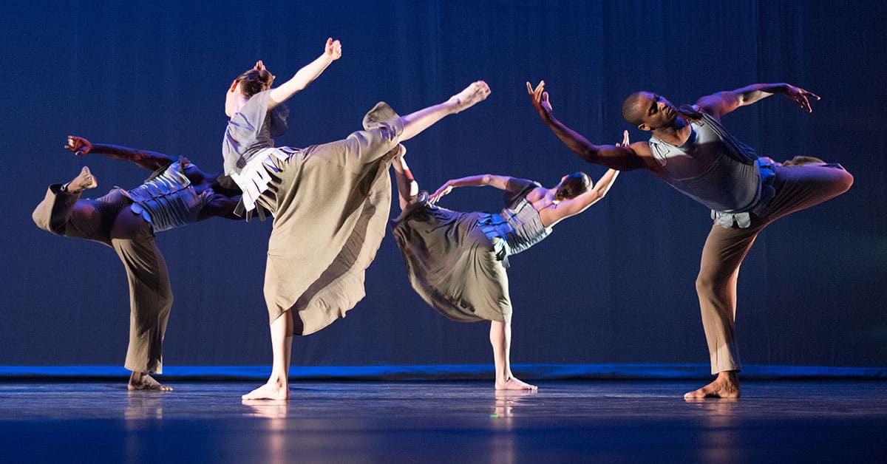

What is Modern Dance?
Modern dance is an expressive dance form that emerged as a rebellion against the rigid rules of classical ballet. It emphasizes creativity, freedom of movement, and personal expression, allowing dancers to explore emotion, body dynamics, and storytelling through motion. Unlike classical ballet, modern dance does not adhere to strict techniques or positions, giving performers the flexibility to interpret music and emotion in unique ways. Modern dance can be performed solo, in duets, or in groups, and often incorporates improvisation alongside choreographed sequences. It draws inspiration from a variety of cultural, social, and artistic influences, making it one of the most versatile and expressive forms of dance. |
 |
Key Elements of Modern Dance
- Freedom of Expression: Dancers are encouraged to interpret music and emotion through unique, personal movement.
- Use of Space and Gravity: Modern dance explores body weight, floor work, and the relationship between the body and gravity.
- Improvisation and Creativity: Spontaneous movement and exploration of the body are central to the style.
- Connection Between Emotion and Movement: Every movement communicates feeling, telling a story without words.
Styles and Techniques Within Modern Dance
Modern dance encompasses several influential techniques, each offering a distinct approach to movement:
- Graham Technique: Focuses on contraction and release, using the torso to express strong emotions.
- Cunningham Technique: Emphasizes clarity, precision, and exploring motion independently of music.
- Limon Technique: Highlights fall and recovery, weight, and the natural flow of movement.
- Release Technique: Encourages relaxation, fluidity, and using breath to guide movement.
Benefits of Learning Modern Dance
Studying modern dance develops strength, flexibility, coordination, and body awareness. It also enhances creativity, improvisation skills, and emotional expression. Modern dance encourages dancers to connect with their inner feelings while engaging audiences through storytelling and performance.
Training in modern dance also provides a strong foundation for other styles, making it an essential discipline for professional dancers and enthusiasts alike. Workshops, classes, and performance opportunities allow students to practice technique, experiment with movement, and develop their personal artistic voice.
Learn from Dancing Videos
|
|
Learn from experienced teachers
Explore in depth and learn from experienced teachers & Book a class to experience the beauty of these dances.